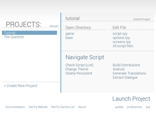
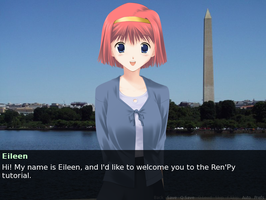
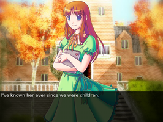
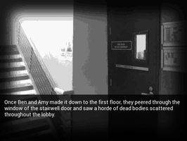

RenPy
Dieser Artikel wurde für die folgenden Ubuntu-Versionen getestet:
Ubuntu 14.04 Trusty Tahr
Zum Verständnis dieses Artikels sind folgende Seiten hilfreich:
Ren’Py Visual Novel Engine  ist eine Programmiersprache und eine Laufzeitumgebung, um die Erstellung von Visual Novels zu erleichtern. Ren'Py bringt für diesen Zweck ein Grundgerüst mit. Die Engine wird auf Basis von Python entwickelt und kann ebenfalls Verwendung finden, um Textadventures, Geschichten oder Präsentationen zu gestalten. Die Dokumentation ist meist auf Englisch verfügbar. Die entwickelte Software muss nicht installiert werden, sondern wird über ein Startskript aus dem Ordner gestartet.
ist eine Programmiersprache und eine Laufzeitumgebung, um die Erstellung von Visual Novels zu erleichtern. Ren'Py bringt für diesen Zweck ein Grundgerüst mit. Die Engine wird auf Basis von Python entwickelt und kann ebenfalls Verwendung finden, um Textadventures, Geschichten oder Präsentationen zu gestalten. Die Dokumentation ist meist auf Englisch verfügbar. Die entwickelte Software muss nicht installiert werden, sondern wird über ein Startskript aus dem Ordner gestartet.
|  |  |  |
| Launcher | Tutorial | The Question |
Installation¶
Die Version von der Projektseite ist aktueller und sollte bevorzugt werden.
Paketquelle¶
Zur Installation sind die folgenden Pakete notwendig [1]:
renpy (universe)
renpy-demo (universe, Spielbares Tutorial, welches die Möglichkeiten des Frameworks aufzeigt.)
renpy-thequestion (universe, Demopiel)
renpy-doc (universe)
python-tk
 mit apturl
mit apturl
Paketliste zum Kopieren:
sudo apt-get install renpy renpy-demo renpy-thequestion renpy-doc python-tk
sudo aptitude install renpy renpy-demo renpy-thequestion renpy-doc python-tk
Die Engine ist anschließend unter "Spiele" zu finden.
Projektseite¶
Die Entwicklungsumgebung beinhaltet für alle Plattformen die nötigen Dateien, um ein Spiel zu erstellen. Zusätzlich ist das Tutorial und das Demospiel "The Question" enthalten. Die aktuelle Version ist auf der Projektseite  zu finden. Das aktuelle Archiv herunterladen und entpacken [2]. Über
zu finden. Das aktuelle Archiv herunterladen und entpacken [2]. Über renpy.sh kann die Umgebung gestartet [3] und auf Wunsch ein Menüeintrag [4] vorgenommen werden.
Programmstart¶
Beim Start präsentiert sich ein kleines Programmfenster. Je nach installierten Paketen kann man aus dem linken Programmfenster das Tutorial oder das Demospiel auswählen und mittels "Projekt starten" / "Launch project" ausführen. Im Tutorial werden die grundlegenden Funktionen zur Erstellung der Dialoge, Animationen oder Entscheidungswege erläutert. Das Demospiel zeigt beispielhaft die entsprechende Umsetzung.
Konfiguration¶
Sprache¶
Über "Preferences → Language → German kann die Sprache der Oberfläche auf Deutsch umgestellt werden.
|  | |
| The Outbreak | Felix, Gaijin |
Spiele¶
Es gibt viele Spiele, welche auf dieser Spiele-Engine basieren. Die Installation läuft immer gleich ab. Man lädt das Spiel von der Seite herunter und entpackt [2] das Archiv. Im Installationsverzeichnis findet man eine ausführbare .sh-Datei, welche das Spiel startet [3].
Die folgenden Seiten geben einen kleinen Überblick:


- Erstellt mit Inyoka
-
 2004 – 2017 ubuntuusers.de • Einige Rechte vorbehalten
2004 – 2017 ubuntuusers.de • Einige Rechte vorbehalten
Lizenz • Kontakt • Datenschutz • Impressum • Serverstatus -
Serverhousing gespendet von